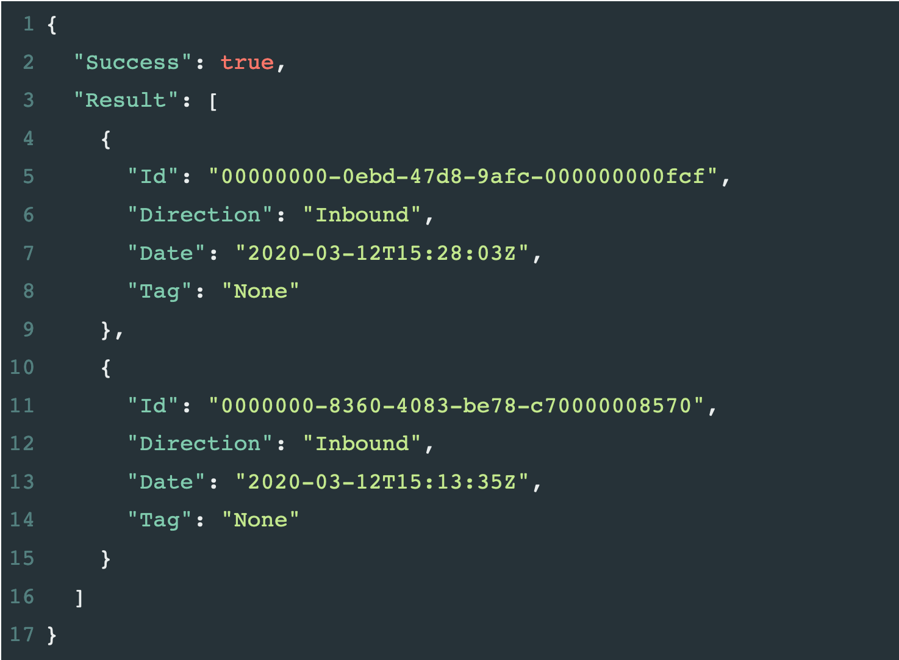

This article assumes the following:
Sending a fax is easy as you may have already discovered, but what about retrieving a fax document for an inbound fax?
In this article we’ll detail the process for converting your inbound faxes into actual documents.
We are going to call Fax_GetFaxIdentifiers to grab an inbound fax we want to save.
It requires the Username/Password/ProdID as well as a StartDate and FaxDirection. We’ll set the StartDate to ‘1/1/2020’ and the FaxDirection to ‘Inbound’. This will get us all inbound faxes that came in after 1/1/2020.
If you have any inbound faxes, you’ll see something like this:
We see two results are returned. Each has an ID, Direction, Date timestamp and a Tag. We are interested in the ID field.
In order to retrieve the actual fax document we need to take that ID, and pass it to Fax_GetFaxDocuments.
The Fax_GetFaxDocuments call requires the standard authentication and two additional parameters: FaxIds1 and Format. The FaxIds1 field requires an ID from the previous call, which identifies the fax document you want to download. The Format field should be one of the following [pdf, tiff, jpeg, png, gif]. We will use pdf.
Side Note: The FaxIds1 field is for the first Fax. You can specify several FaxIds fields. So if you had 4 faxes you would populate FaxIds1, FaxIds2, FaxIds3, FaxIds4. You can retrieve multiple fax documents at the same time to save calls to the API.
After you call Fax_GetFaxDocuments, you will see a response similar to this:
{
"Success": true,
"Result": [
{
"FaxFiles": [
{
"ContentType": "application/pdf",
"ContentLength": 55344,
"FileContents": "JVBERi0xLjINCg0KNCAwIG9iag0KPDwNCi9FIDU1MDA5DQovSCBbIDk2MyAxMzkgXQ0KL0wgNTUzNDQNCi9M
aW5lYXJpemVkIDENCi9OIDENCi9PIDcNCi9UIDU1MjE0DQo+PiAgICAgICAgICAgICAgICAgICAgICAgICAgI
CAgICAgICAgICAgICAgICAgICAgICAgICAgICAgICAgICAgICAgICAgICAgDQplbmRvYmoNCg0KeHJlZg0KNC
A2DQowMDAwMDAwMDEyIDAwMDAwIG4NCjAwMDAwMDA4NjkgMDAwMDAgbg0KMDAwMDAwMDk2MyAwMDAwMCBuDQo
wMDAwMDAxMTAzIDAwMDAwIG4NCjAwMDAwMDEzMDk..."
}
],
"Id": "0000000-7722-42d9-b55f-00000000000",
"Direction": "Outbound",
"Date": "2020-03-12T15:28:42Z",
"Status": "Ok",
"Format": "pdf",
"PageCount": 1
}
]
}
Let’s examine this result in detail. First we have the Format which is PDF. The ContentLength is also important as it gives you an indication of the size of the document. In this case it looks like a small one page document at 55,344 bytes. Now we want to proceed with decoding this document, so the important field here is the FileContents.
FileContents is base64 encoded so it returns a very long string of random-looking characters. You can read more about base64 encoding here.
<?php
$str = 'SGVsbG8gV29ybGQg8J+Yig==';
echo base64_decode($str);
//Outputs "Hello World"
?>
Here is the PHPfiddle to try on your own.
# Fax Base64 data
fax_data = b'iVBORw0KGgoAAAANSUhEUgAABoIAAAaCCAYAAAABZu+EAAAqOElEQVR42uzBAQEAAACAkP6v7ggKAAAAAAAAAAAAAAAAAAAAAAAAAAAAAAAAAAAAAAAAAAAAAA
AAAAAAAAAAAAAAAAAAAAAAAAAAAAAAAAAAAAAAAAAAAAAAAAAAAAAAAAAAAAAAAAAAAAAAAAAAAAAAAAAAAAAAAAAAAAAAAAAAAAAAAAAAAAAAAAAAAAAAAAAAA
AAAAAAAAAAAAIcAeHkAAeLqlDIAAAAASUVORK5CYII='
# For both Python 2.7 and Python 3.x
import base64
with open("faxdoc.pdf", "wb") as fh:
fh.write(base64.decodebytes(img_data))
# C# is the easiest of all. One line of code!
File.WriteAllBytes(@"c:\directory\yourfile.pdf", Convert.FromBase64String(yourBase64String));
So as one can see, converting to a usable file from base64 data is relatively simple and easy to implement. Please contact us if you have any questions.
March 26, 2020 /